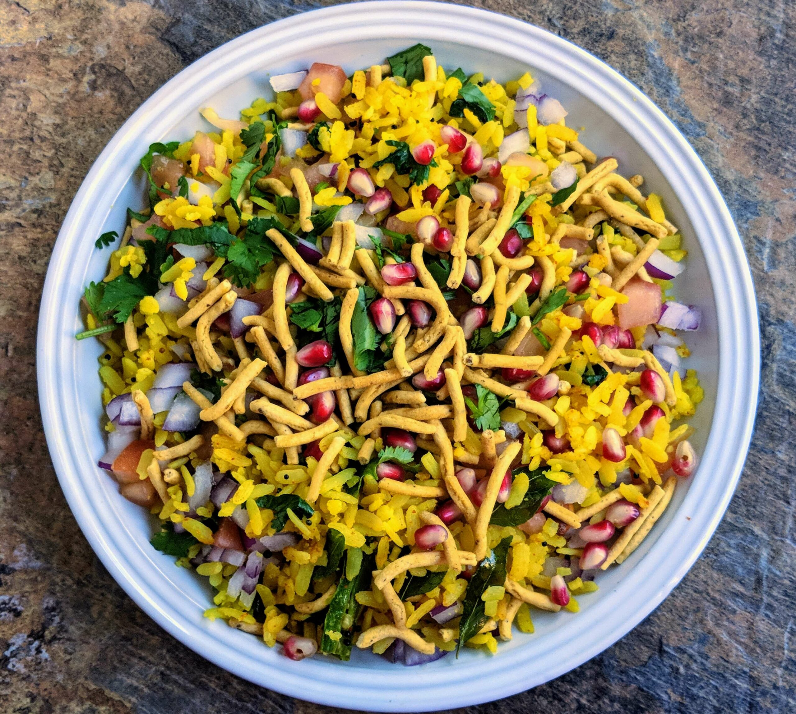

Poha

The recipe to this famous Indian breakfast
Poha is an Indian breakfast which is made up on primarily flat rice. It can be made in 30 minutes. But it takes less than 5 minutes to finish.
There are different types of Poha according to geographical locations. Maharashtrian poha is different from Indori poha.
Ingredients
- Flat rice (Poha)
- Peanuts
- Onions
- chilli
- tomato
- potato
- Oil
- mustard seeds
- cumin
- chilli powder
- Turmeric powder
- Salt
Steps
- Cut the vegetables finely and keep them aside
- Soak the poha in water and rinse the water in some time, keep this aside
- Take 1 teaspoon of oil in a pan
- Heat the oil in low flame
- Put the peanuts in it until they become crispy
- Take the peanuts out
- Put mustard seeds and cumin
- Put the chilli, cook for 1 minute
- Put the chopped onions, mix it well and leave till they become translucent
- Put other vegetables too, wait for them to cook
- Add the spices and cook them for two minutes
- Add Poha and mix it well
- It is ready to serve
Go back to main page